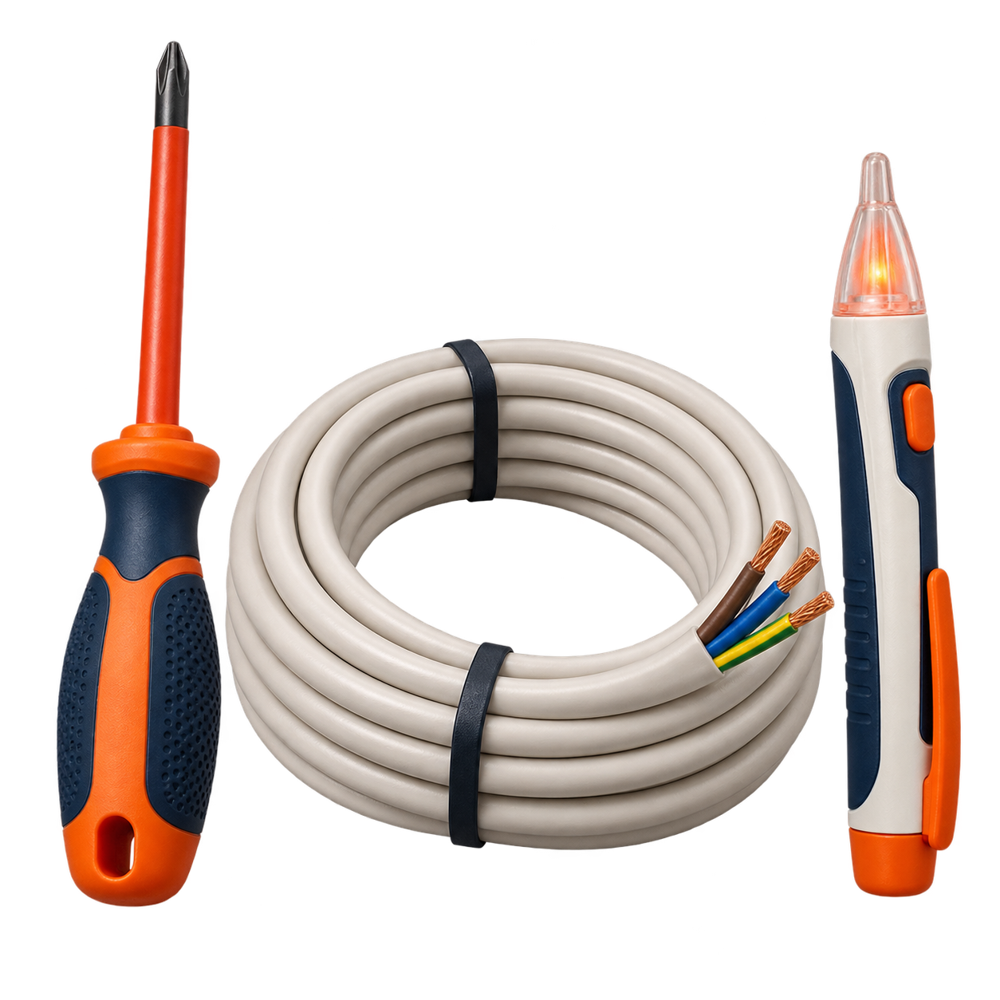

Essential systems
Electrical, plumbing, gas & air conditioning
Help with the essential systems that keep a property safe, comfortable and working as intended.
Explore serviceNine practical service groups
Start with the closest category. Ellis will clarify the scope, location, provider pathway and any trade-specific requirements before work proceeds.
One managed service network
Requests may be handled by Ellis teams or reviewed service partners. Ellis confirms the suitable pathway, actual attending provider and relevant scope requirements before work proceeds.

Essential systems
Help with the essential systems that keep a property safe, comfortable and working as intended.
Explore serviceRepairs inside the home
Practical help for repairs, fitting, assembly and interior upkeep across homes and managed properties.
Explore serviceOpenings and security
Repair and replacement pathways for the moving, glazed and screened parts of a property.
Explore serviceWeather-facing maintenance
Inspection-led maintenance for roofs, rainwater goods and exposed exterior surfaces.
Explore serviceGrounds and garden care
Routine garden care and scoped improvements for outdoor areas that need to stay usable and well managed.
Explore serviceBoundaries and outdoor living
Maintenance and project coordination for built outdoor elements, boundaries and pool surrounds.
Explore serviceLarger property works
A clear first point of contact for renovation, building and structural enquiries that need careful scoping.
Explore serviceChecks before work
Help finding the right next step when a property decision depends on inspection, documentation or approval.
Explore serviceClear, clean and remediate
Coordinated support for cleaning, moving, pest concerns and specialist hazard enquiries.
Explore serviceStart with one request
Share the task and location. Ellis will confirm the appropriate next step and who would attend.